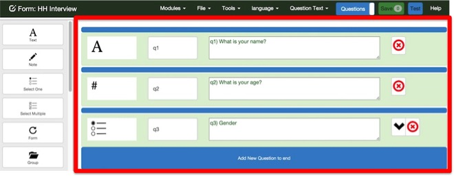
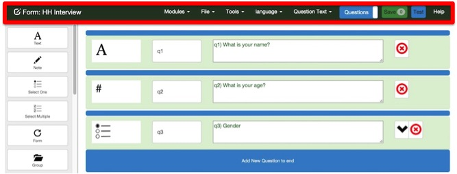
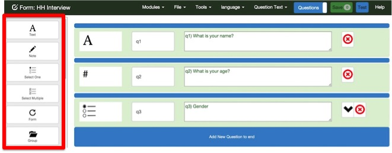
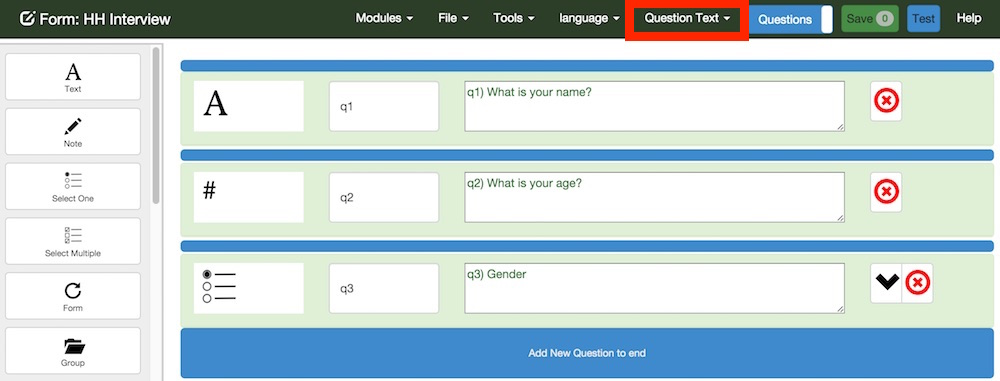

Layout
Content
Questions are shown in the Content area. If you click on the Questions toggle button in the menu bar then the choice lists will be shown
Menu Bar
The menu bar has:
- Modules. This menu item appears on all Smap Server web pages and allows you to navigate between the modules on the server including the editor, administration and analysis
- File.
- Save. Save the changes you have made to the form
- Open. Open an existing survey for editing. You can also open a form for editing by clicking on its name in the form management page
- New. Create a new form
- Validate. Check for errors and warnings in the form
- Languages. Create, Rename and Delete languages used in the form
- Media. Upload and delete media files attached to this form
- Settings. Change the form name, move it to a different project, set the default language, set the name of instance files, add a PDF template to use when saving the a survey instance
- Changes. The changes that have been applied to this form.
- Changes. The changes that have been applied to this form
- Calculations. Server side calculations.
- Tools. Productivity tools to make quick changes to the form
- Mark required. Set all questions to be required except for read only note questions
- Mark not required. Set all questions to be optional
- Translate. Quickly translate question and choice labels to another language. These translations can also be done in the questions view, however the translate page will be quicker and easier
- The name of the current language Select this to change the current language
- The name of the current property Select this to change the current property
- Question / choice list toggle Switch between viewing the questions and the choice lists
- Save Green button to save the form. Shows the number of changes that are ready to be saved. This button will be disabled if there are errors or no changes have been made.
- Test Blue button to test your form in web forms
- Help shows this web page that you are currently reading
Adding questions and choices
Questions
There are several ways to add a question
- Clicking on a question type in the toolbar. This will add that type of question to the very end of the survey.
- Dragging a question type from the tool bar over a blue add question bar. This will place the new question where you drop it.
- Click on one of the blue add question bars. This will create a text type question at the location you clicked. You can then change the type of the question by clicking on the question type icon next to the question name
Choices
Choices can be added:
- In the questions view under each select question.
- In the choice list view under each choice list.
Tool Bar
The toolbar shows the question types that can be added to your survey. Drag and drop an icon onto one of the blue buttons in the content area to add that question type to your form. If you click on an icon then it will be added to the end of the form.
Question Properties
The following question properties can be modified:
- Question Text
- Question Hint
- Media - Images, Video and Audio
- Appearance
- Constraint
- Constraint Message
- Relevant
- Required and the message to be shown if the user attempts to skip a required question
- Autoplay - Whether or not to automatically play a video or audio file when a question is shown
Select the question property to be modified from the menu bar. The default property is "question text as shown below:" 
Linking Surveys
Forms can be linked for analysis. For example if you have a form that collects data on assets and another form that collects information on faults with these assets, then if they are linked, you can view the asset details while reviewing a fault, or view the faults while reviewing an asset.
Setting up linked surveys
To allow linking to a form specify a "Unique Key" in the form settings. This will cause a unique value to to be created for each record in the form. In a second form you can then select a question that will store this unique key. To do this select the question property of "Linked Survey", enable the link and specify the name of the linked survey.
Filling in the key question
In our example, when you are filling in the details of a fault you will need to specify the unique key of the asset. You can do this in the following ways. How this is done will depend on the type of the question that stores the unique key.
- Text question. Simply write in the key. Presumably a printout of assets and their keys will have been made available. Or perhaps the key will be written on the asset.
- Barcode question. Similar to the text approach except that the key can be enter more reliably by swiping with a barcode
- Select the asset using a select_one type question
Selecting the asset using select_one question
Security
To link forms you will need to be a member of both of the projects containing the forms.
To add a select question to a form that uses data from another form to get its unique key then you need to be a member of both of the projects containing the forms.
Validation
Checks are made for the following errors and warnings:
- Errors
- An empty name
- Invalid characters, such as spaces, in the name
- A question name that is not unique across the entire survey
- A choice name that is not unique within its choice list
- A reference to another question that does not exist, for example including the answer to another question in the label
- A mismatched number of parenthesis in a relevance, constraint or calculation
- Warnings
- A blank label (except for groups or sub forms)
- Select questions without choices
Warnings are only checked when you press the validate menu.
Validating on save
The editor tries to spot errors as you make them and then give immediate feedback. Hence as soon as you type an invalid character into a question name then the error message will be shown. However for performance reasons sometimes error checking has to wait until you save the survey. For example you might delete a question without any errors being shown but somewhere else in your survey another question refers to the deleted question. This error will only show up when you press the Save button or select the Validate option from the file menu
Reviewing errors and warnings

If an error is detected while you are changing a question (or a choice) then the question is highlighted and an error message is shown
If errors are found when you click the save button or validate the survey then the number of errors and warnings are shown in the toolbar along with a two buttons. If you click on the red button it will take you to the next error. Clicking on the yellow button takes you to the next warning.
Differences with validation using the xlsForm editor
- In the online editor, question names must be unique in the entire survey.
- In xlsForm the name only needs to be unique within a form For example a begin repeat can have a question with the same name as is in the main form.
- However if you attempt to refer to the question using the ${…} syntax then xlsForm will report an error if it is not unique in the entire survey.
- It is also probably better that names are forced to be unique across all forms as this will reduce confusion during analysis. Hence the tighter restriction adopted by the Smap online editor.
- However this means that if you have an existing form with two questions that have the same name then you will not be able to edit it online unless you delete one of the questions.
Trying out your survey
Once you save a survey it is ready to be used. Any person who has an "enumerator" access to the project, where you created your new survey, will be able to download the survey to fieldTask and start collecting data
There is also a test button that will open the survey in webforms and allow you to try it out without having to leave the editor.
Publishing and un-publishing your survey
Publishing
When you start creating a new survey form it is not published. However as soon as you submit the first completed survey from fieldTask or webForms is is considered to be published. This means data has been collected for the survey and some additional restrictions will be placed on the editor.
- You will not be able to change the name of a question as this name identifies the column in the results table that holds the answers for that question.
- You will not be able to change the type of a question as Smap server can't store two different types of data in a single results column
- You can delete a question but its not really gone as the results gathered for that question are not deleted. Hence you won't be able to create another question with the same name as the deleted question unless it is also the same type, (text integer etc).
If you have modified a survey part way through collecting real data then you will just have to put up with the above restrictions. However you will usually want to submit data while testing a survey so that you can see how the results will look during analysis. After you have done this you can un-publish the survey.
Un-Publish
To un-publish you just need to delete all the data that has been submitted. (Careful here).
This is done in the analysis dashboard where you can create a table panel for the survey, review the data that is there, then select the aside using the < button and press delete
Once the survey has been unpublished the editing restrictions will be lifted
Editing Forms on your Phone
You can edit or create forms on a small device such as a phone. However because of the small screen size the editor will look a little different. The main differences are:
- The drag and drop feature to move questions and choices is currently not available on devices that use touch.
- The toolbar with the types of question you can add will not be shown. You will have to add a question by pressing on one of the blue add question bars. This will create a question of type text at the location you selected. You can then press the type icon, on the question, to change the question type.
- The button bar at the top of the screen will be much smaller. Buttons, such as save will instead be accessible from the menu.
Productivity Tools
One of the advantages of an online editor is that you can add some short cuts for common tasks These will be added to as the editor evolves. These short cuts are available from the "Tools" menu. Note that some may be disabled if there are unsvaed changes in the form.
Making questions mandatory
Select Make Required from the tools menu.
Read only questions will not be set to required, however if you have made a specific read only question required so that it can be used as a constraint then it will be left unchanged
Not Required
Select the Not Required option under the tools menu.
Summary of Features
Question Types
Addition, deletion and renaming of the following question types:
| Type | xlsForm | Version | Notes |
|---|---|---|---|
| text | 15.12+ | ||
| note | 15.12+ | ||
| select_one | 15.12+ | ||
| select_multiple | 15.12+ | ||
| begin repeat | 15.12+ | A sub form If you are editing a form loaded before version 15.10 the repeat count will need to be re-entered |
|
| begin group | 15.12+ | ||
| image | 15.12+ | ||
| audio | 15.12+ | ||
| video | 15.12+ | ||
| integer | 15.12+ | ||
| decimal | 15.12+ | ||
| calculate | 15.12+ | ||
| barcode | 15.12+ | ||
| date | 15.12+ | ||
| datetime | 15.12+ | ||
| time | 15.12+ | ||
| geopoint | 15.12+ | A GPS point | |
| geoshape | 15.12+ | An area recorded with the GPS - Web Form only For fieldTask or odkCollect, use a begin repeat containing a geopoint in order to record an area. The name of the begin repeat must start with "geopolygon_" |
|
| geotrace | 15.12+ | An line recorded with the GPS - Web Form only. For fieldTask or odkCollect use a begin repeat containing a geopoint in order to record a line. The name of the begin repeat must start with "geolinestring_" |
Question Properties
| Property | xlsForm | Version | Notes |
|---|---|---|---|
| Name | 15.12+ | Question names are shown as column headings in exported results. Hence you may want to assign meaningful names to questions. However you can also export a "codebook" that shows the question text for each question name. When data is exported to XLS you can also include the question text in the column headings. | |
| Question Text | 15.12+ | Text can be added for each language included in the survey | |
| Hint | 15.12+ | A hint can be added for each language included in the survey | |
| Media | 15.12+ | Select an image, video and/or audio to add to a question | |
| Choice Filter | 15.12+ | The choice filter is used to alter the choices that are shown for a select question based on the answer to previously asked questions. FOr example it is often used for cascading selects where a list of say villages might depend on the selected region | |
| Relevant | 15.12+ | Relevance is used to conditionally show a question. Currently the online editor uses the same syntax as xlsForm. For example ${gender} = 'male'. The checking of relevance and constraints is much better when loading a form from the xlsForm editor. If you are having problems with validation of contraints and relevance then you may want to export the form as an XLS file and then upload it. Otherwise you may only find the problem when testing the survey on a phone. | |
| Constraint | 15.12+ | ||
| Constraint Message | 15.12+ |
Choice Properties
| Property | xlsForm | Version | Notes |
|---|---|---|---|
| Name | 15.12+ | Question names are shown as column headings in exported results. Hence you may want to assign meaningful names to questions. However you can also export a "codebook" that shows the question text for each question name. When data is exported to XLS you can also include the question text in the column headings. | |
| Choice Text | 15.12+ | Text can be added for each language included in the survey | |
| Media | 15.12+ | Select the images, video and audio to add to a choice | |
| Filters | 15.12+ | These are used to filter the choices that are shown with a select question based on a previous response |
Organising your survey
Addition, deletion and renaming of the following question types:
| Feature | xlsForm | Version | Notes |
|---|---|---|---|
| Sub Forms | 15.12+ | Additional forms can be added to the default "main" form. Questions in these sub-forms are asked multiple times. | |
| Repeat Counts | 15.12+ | Sub forms can be specified to a repeat. This can be an number or the answer to another question such as "How many people are in the household? | |
| Groups | 15.12+ | ||
| Choice Lists | 15.12+ | Many select questions can reference the same list of choices. |
Productivity tools
These tools make specific tasks when editing your forms quicker and easier:
| Tool | xlsForm | Version | Notes |
|---|---|---|---|
| Automatic naming of questions and choices | 15.12+ | Questions are named by default q1, q2 etc. Choices are named 0,1 etc. You can change these names. | |
| Make required | 15.12+ | Make all questions required except for read only note questions. This menu option is disabled if you have un-saved changes | |
| Make not required | 15.12+ | Make all questions optional. This menu option is disabled if you have un-saved changes | |
| Translate | 15.12+ | Quickly apply translations for labels and choices. | |
| Start a new survey from existing | 16.01+ | Base a new survey on an existing survey and then add new questions and delete questions you don't need. |
Miscelaneous
| Feature | xlsForm | Version | Notes |
|---|---|---|---|
| Languages | 15.12+ | Use multiple languages such as Bahasa, Arabic, English in your survey | |
| Store results in a shared table | 16.01+ | Multiple surveys can update the same results table. You can use this to collect a single set of data in multiple passes. More information is available here. |
What to do if something goes wrong
The online editor is beta software and will stay that way for some months while the bugs are found and fixed. An editor allows for many different ways of doing a task hence its impossible to test everything. If something does go wrong you can try the following
- Check the changes page by selecting the file menu and then ""changes". This should show all the saved changes that you have made and which version of the survey they apply to.
- If you are not editing a form that already has submitted data then you can export as an "edited xlsForm". Then continue the editing in the xlsForm editor and upload when the problem is fixed
- Contact Smap for support. We will be very interested in the problem if it was caused by a bug in the editor and will fix it free of charge. If you just made a mistake and want it to be reversed thenwe can probably help with that if you have a support contract or for a one off fee